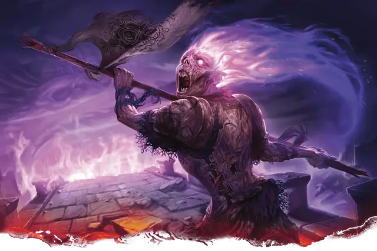

Верстен Керн
Wersten Kern
Средняя Нежить, законно-злая, именной НИП

Класс Доспеха 18 (латы)
Хиты 178 (21к8 + 84)
Скорость 30 футов
| мод | спас | ||
|---|---|---|---|
| СИЛ | 21 | +5 | +5 |
| ЛОВ | 10 | +0 | +0 |
| ТЕЛ | 18 | +4 | +4 |
| мод | спас | ||
|---|---|---|---|
| ИНТ | 13 | +1 | +1 |
| МДР | 14 | +2 | +7 |
| ХАР | 16 | +3 | +9 |
Иммунитет к урону яд
Иммунитет к состояниям испуг, истощение, отравление
Чувства тёмное зрение 60 футов, пассивное Восприятие 12
Языки Общий, Инфернальный, Соламнийский
Опасность 14 (11500 опыта)
Бонус мастерства +5
Особенности
Стойкость нежити. Если урон опускает хиты Верстена до 0, он совершает спасбросок Телосложения со Сл 5 + полученный урон, если только это не был дробящий урон или урон от критического попадания. При успехе хиты Верстена опускаются до 1.
Необычная природа. Верстен не нуждается в воздухе, еде, питье и сне.
Действия
Мультиатака. Верстен совершает три атаки Стягом и использует Ужасающую литанию, если доступна.
Стяг. . Рукопашная атака оружием: +10 к попаданию, досягаемость 5 фт., одна цель. Попадание: 10 (1к10 + 5) колющего урона плюс 13 (3к8) урона некротической энергией. Если цель — гуманоид, она должна преуспеть в спасброске Харизмы Сл 16 или станет проклятой. Проклятье длится до тех пор, пока не будет снято заклинанием снятие проклятья [remove curse] или другой магией. Пока существо проклято, чёрные тернистые стебли роз прорастают из его тела. Оно совершает с помехой проверки характеристик и броски атаки, а его скорость уменьшается на половину. При успехе существо становится невосприимчивым к проклятию на 24 часа.
Использование заклинаний. Верстен накладывает одно из следующих заклинаний, не нуждаясь в материальных компонентах. Его базовой характеристикой является Харизма (Сл спасброска 16):
• 1/день каждое: каменная стена [wall of stone], рассеивание магии [dispel magic].
Ужасающая литания (перезарядка 5-6). Верстен произносит имена душ, убитых Сотом и его компанией, передавая пережитый ими смертельный ужас. Все существа, не являющиеся нежитью, в пределах 30 футах от неё должны совершить спасбросок Мудрости Сл 16. При провале, существо получает 22 (4к10) урона психической энергией и становится испуганным Верстеном на 1 минуту. При успехе существо получает половину этого урона и не становится испуганным. Испуганное существо может повторять этот спасбросок в конце каждого своего хода, оканчивая эффект на себе при успехе.
Описание
Верстен Керн — знаменосец и чемпион Лорда Сота. Как и многие другие рыцари Сота, она погибла вместе со своим господином во время Катаклизма и была проклята. В бою она орудует нечестивой пикой, на которой развевается штандарт Сота — черная роза, а её крики способны остановить сердца могучих воинов. Верстен неукоснительно следует приказам Сота и будет служить ему, пока не погибнет во второй раз